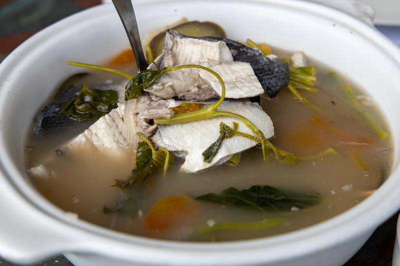

SINIGANG NA BANGUS RECIPE

Sinigang is a Filipino dish characterized by the sour and savoury tamarind flavored soup.
Ingredients
- 1 kilo bangus, cleaned, sliced and slightly salted
- 3-4 pcs tomatoes, sliced
- 2 pcs. onions, sliced
- 10 pcs okra, sliced
- 4 pcs green long pepper
- 1 bundle kangkong (water spinach), washed
- 1 sachet sinigang Mix (Tamarind flavor) or fresh kamias
- 1 liter water (add more if you want more broth)
Cooking Procedure
- In a big pot with boiling water, put the tomatoes and onions. Simmer until they are soft.
- Then add the Sinigang mix, let it simmer for awhile, then add the bangus..
- Then after a few minutes of boiling, add the ginger, okra and green long pepper.
- Let it boil for a few minutes, cover the pot. Then add the Kangkong leaves (washed again).
- Let it cook for about 5 minutes or so (don’t overcook the leaves). Season to taste.
- In a few minutes our Sinigang is ready. Enjoy!